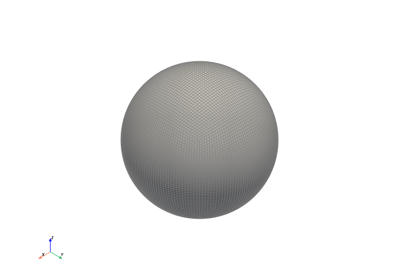

PyVistaの活用#
PyVistaがすでにいくつかのプロジェクトで使用されており，あらゆる可視化に使用できることを紹介します．(講演時間15分)
Tip
このチュートリアルのセクションは，PyVista ドキュメントの External Examples の章から採用されています．
PyVistaができることの，より長い，より技術的な例のリストを以下に示します!
注意
これらの例は外部のWebサイトにリンクしています．これらのリンクのいずれかが壊れている場合は，リポジトリでissueを提起してください．

sunkit-pyvista#

PyHyperbolic3D#

topoGenesis#

pyFBS: Pythonによる周波数ベースのサブストラクチャリング#

Magpylibでのコイル磁力線の例#

近隣分析についての Ivan Nikolov#

ボクセリゼーションの Ivan Nikolov#

視覚化ライブラリの Ivan Nikolov#

勾配降下ビジュアライザー#

GmshModel#

GeoVista#

geemap#

PteraSoftware#

Stﾃｩphane Laurent's artwork#

VesselVio#

大気対流#

Damavand火山#

Anvil Cirrus Plumes#

PyVistaによる最適化可視化#

FLEM: 拡散的景観進化モデル#

Orvisuデモアプリケーション#

PyMeshFixのサンプルギャラリー#

TetGenの実例ギャラリー#

PVGeoの実例ギャラリー#

FORGE地熱プロジェクト#

エアロサンドボックス#

OpenFOAMレンダリング#

離散化を使用した3 Dレンダリング#

Open Mining Format (omf) の3 D表示#
演習#

Using GeoVista